Issue No. 2 · Week of November 7 – 14, 2026 · From your MyMind saves
One Piece of MyMind
One week of your saves, arranged into six picture themes and six reading stories. Nothing repeats, and nothing is here by accident.
Pictures · one · 7 pictures
The mask
Four masks from this week. Three come from one couture series: a profile in a black rhinestone head mask, a beaded mask on a mannequin bust in a lace jacket, and a model in a fully crystal-covered mask over a cream blazer with raw seams. The fourth is a carved wooden mask with curled horns, shot on black. Three saves from earlier months join them: an ancient clay mask from last November, a Dogon ceremonial mask wearer from August, and a museum plate of African masks. The couture masks hide a face to make a new one; the carved masks were made to become someone else entirely. Read alongside: the Vatican's Anima Mundi collection and the debate over sacred objects gifted to it.
Person in crystal-covered black maskSide profile of a person in a black rhinestone-covered head mask, wearing an iced chain against a dark background.x.com
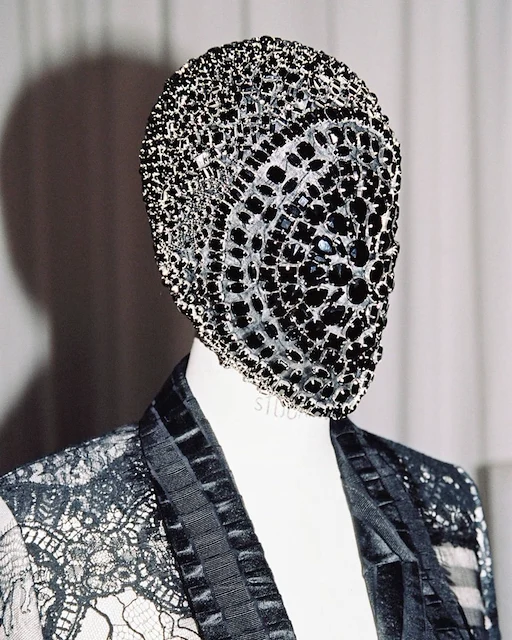
Embellished Mask on Mannequin BustA black and silver beaded face mask covers a white mannequin bust wearing a black lace jacket against a striped wall.x.com
Ancient Clay MaskSaved 2025-11-26. Weathered ceramic mask with elongated face, circular eye holes, and earth-toned coloring Found by same-vibe from this week.waste.space
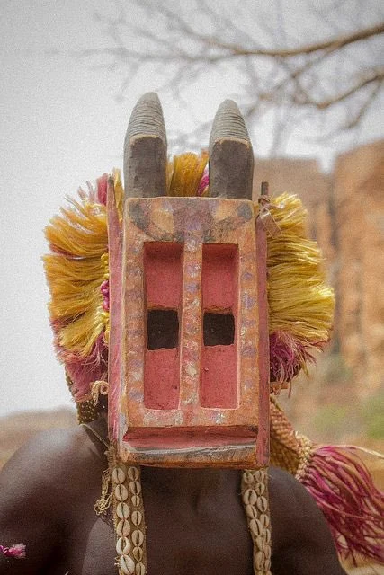
Dogon Ceremonial Mask WearerSaved 2026-08-26. A person wearing a traditional African wooden ceremonial mask with fiber fringe. Found by same-vibe from this week.x.com
Four vintage diagrams from one save: Earth and Moon orbiting the Sun month by month, a sectional view of the Sun with the inner planets, the whole system with orbital circles and grid lines, and the Sun, Jupiter, Earth, and Moon compared by diameter. Two animated astronauts drift beside them: one floating near a glowing black hole, one lying on a night beach while a red planet rises. Three earlier saves extend the lineage: a solar system diagram from January, a vintage palmistry chart, and a solar anatomy chart from March. Palmistry and astronomy in one row is the point: they are both attempts to draw systems too big to see.
Sectional Side and Edge View of SunWhite-line diagram on black showing the Sun with planets Mercury, Venus, Earth and Mars in plan and edge views.x.com
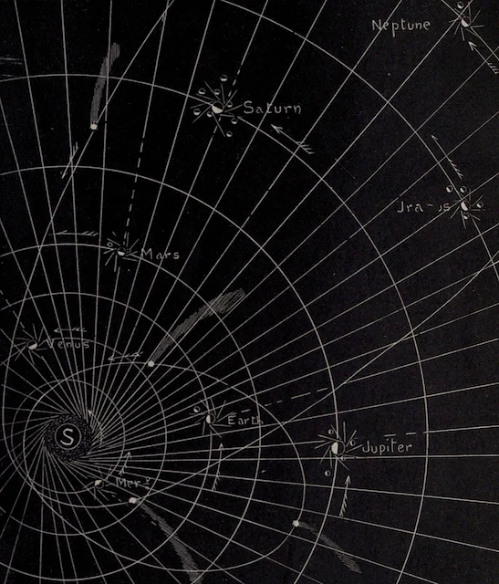
Diagram of Solar System Planetary OrbitsBlack-background line diagram showing the Sun and labeled planets with radiating grid lines and concentric orbital circles.x.com
Astronaut Resting by a Cosmic ShoreAn animated scene showing the outline of an astronaut lying down on a beach beneath a starry sky while a red celestial body rises and reflects in the water.x.com
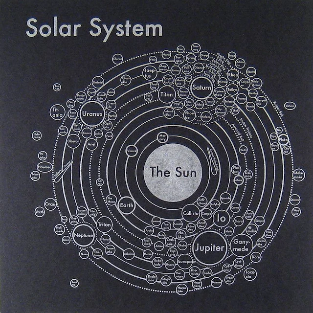
Solar System DiagramSaved 2026-01-15. Educational diagram showing the Sun, planets, and moons of our solar system with orbital paths Found by same-vibe from this week.x.com
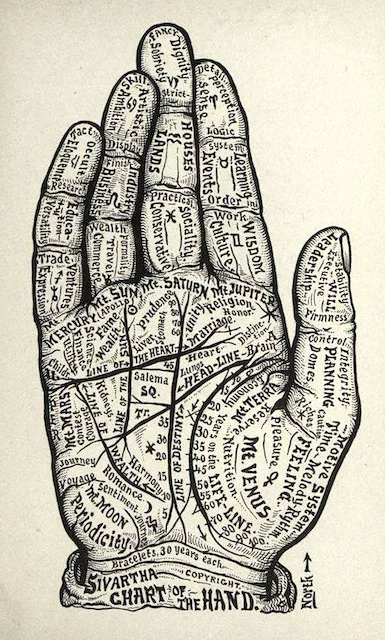
Vintage Palmistry ChartSaved 2026-01-27. A detailed palmistry diagram showing palm reading lines and regions with labeled text annotations Found by same-vibe from this week.x.com
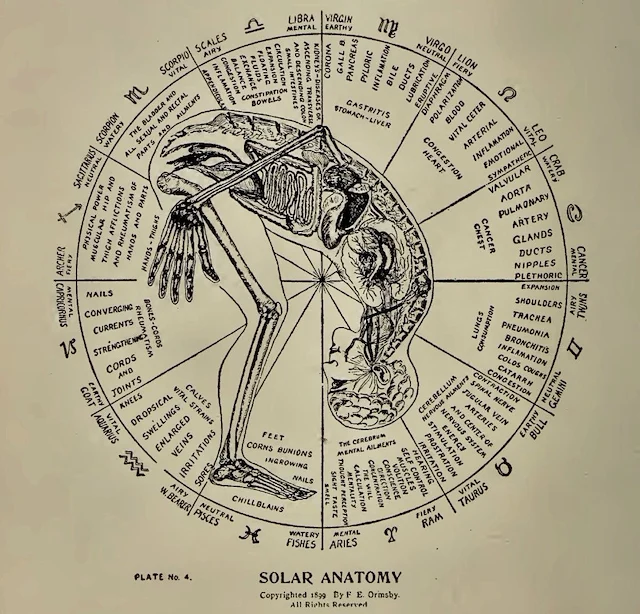
Solar Anatomy Astrological ChartSaved 2026-03-04. Vintage astrological diagram showing human anatomy mapped to zodiac signs and celestial influences Found by same-vibe from this week.mymind
Pictures · three · 5 pictures
Paper and cloth
Figures built from scraps. An artist assembling a collage from vintage photos and red botanical cutouts. A collage layering two people grooming their hair over an antique map and blue fabric. Tschabalala Self's studio, where bodies are constructed on the floor from recycled cloth. Three fabric flowers with human faces standing in a pot. A mixed-media painting of figures on a pink sofa, pencil lines loose, paint dripping. Read alongside: Paul Éluard and Max Ernst's 1922 book, the proto-surrealist collaboration that helped make collage a language.
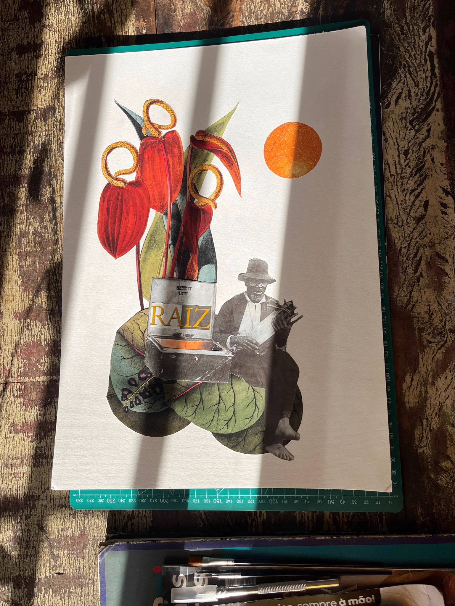
Creating a Mixed Media CollageThe video shows an artist meticulously assembling a mixed media collage featuring cutouts of vintage photographs, red botanical illustrations, and decorative elements on paper.x.com
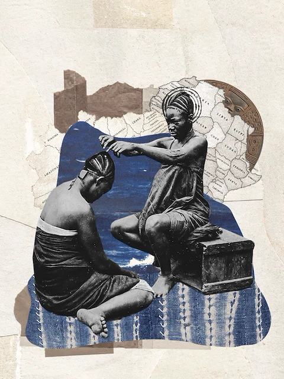
Vintage Photo Collage with Antique MapCollage of a vintage photo of two seated people grooming hair, layered over an old map and blue patterned fabric.x.com
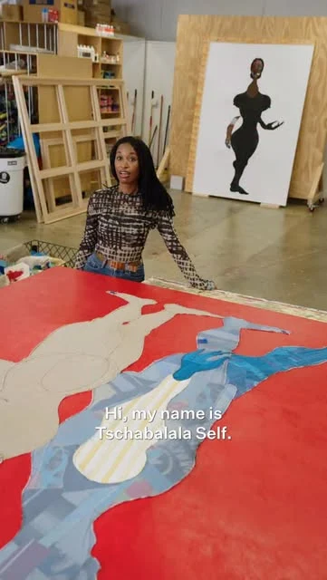
Studio Tour with Artist Tschabalala SelfArtist Tschabalala Self gives a behind-the-scenes tour of her upstate New York studio in the Catskills. She shares her creative process of constructing layered assemblage figures on the floor from recycled fabrics,…instagram.com
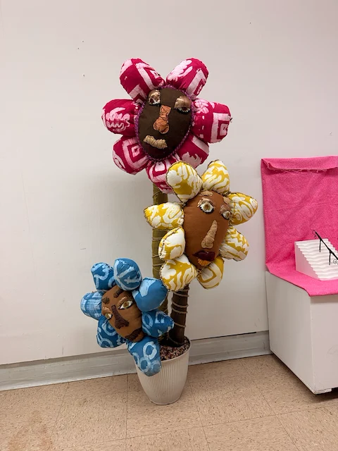
Fabric Flower Sculptures in White PotThree fabric flowers with human faces, in pink, yellow, and blue patterned cloth, stand in a white pot against a wall.x.com
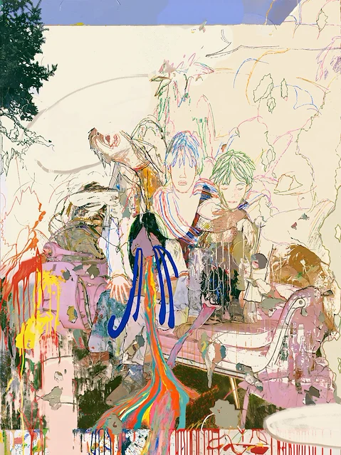
Figures on Pink Sofa with Paint DripsMixed-media painting of figures on a pink sofa, with dripping colored paint and loose pencil linework on cream background.x.com
Children of Blood and Bone exists twice this week: as a Hollywood trailer and as handmade-looking pages. Three saves show the Maji clan symbols, emblems with dot patterns, deities, and descriptions. One shows the Opisa realm mapped in blue ink with red-labeled cities. The trailer post ties them to the screen version, opening January 15. One same-vibe save reaches back to July: the boxed set of the source novels, sitting under the maps it explains. Read alongside: the trailer breakdown covering Gina Prince-Bythewood's adaptation.
Opisa Fantasy Map in Blue InkOrnate blue ink map of the fictional realm Opisa, with red-labeled cities, regions, and a Holy Temple.mymind
New Trailer for Children of Blood and Bone ReleasedA promotional post announces the new trailer for Children of Blood and Bone, directed by Gina Prince-Bythewood. Using the tagline about rising together to take down an empire, it says the film opens exclusively in…x.com
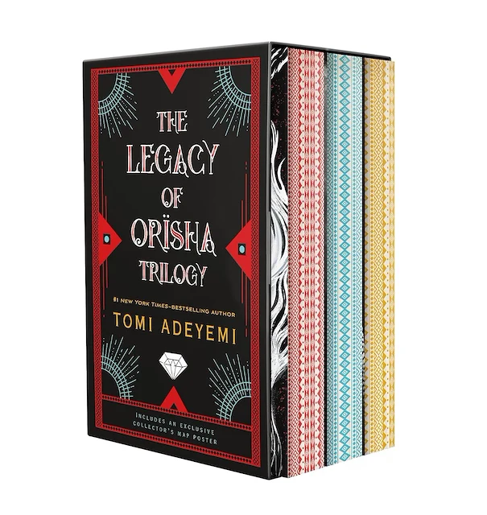
Legacy of Orisha Boxed SetSaved 2026-07-04. A boxed set collecting the Legacy of Orisha series by Tomi Adeyemi, including designed page edges and a full-color map. Found by same-vibe from this week.amazon.com
Two photographs from the same beach shoot: a figure in a flowing black pleated robe with a circular cutout walking the shoreline, and a model in white feathers with peacock and pheasant plumes against turquoise water. A behind-the-scenes clip shows how the white look came together in the studio before it ever touched sand.
Model in feathered costume on beachA model in a white feather costume with peacock and pheasant plumes poses on a turquoise ocean beach.x.com
Fashion Photoshoot Behind the ScenesA video contrasting how a fashion shoot started and ended, featuring a model posing in a creative white outfit with dramatic hair styling in a studio.x.com
Pictures · six · 4 pictures
How abstraction is taught
An eight-panel grid where a cow is drawn progressively into geometric forms until it becomes a Mondrian. Next to it, ten abstract artists on camera explaining what abstraction does. Two same-vibe saves from earlier months supply the lineage: Ellsworth Kelly's 1954 sketchbook and the appendix drawings from Kandinsky's Point and Line to Plane, the 1926 textbook that tried to turn abstraction into grammar.
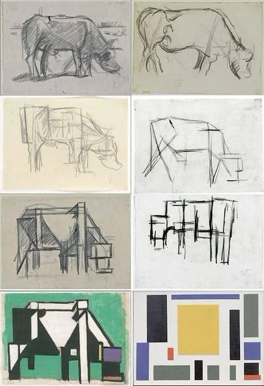
Mondrian Cow Abstraction ProgressionEight-panel grid showing a cow drawn progressively abstracted into geometric forms, ending in a Mondrian-style composition.x.com
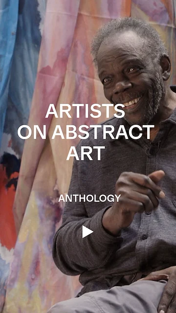
Artists on Abstract ArtTen renowned abstract artists reflect on the nature, process, and political implications of abstract art, discussing how it challenges perceptions, opens minds, and offers infinite possibilities.instagram.com
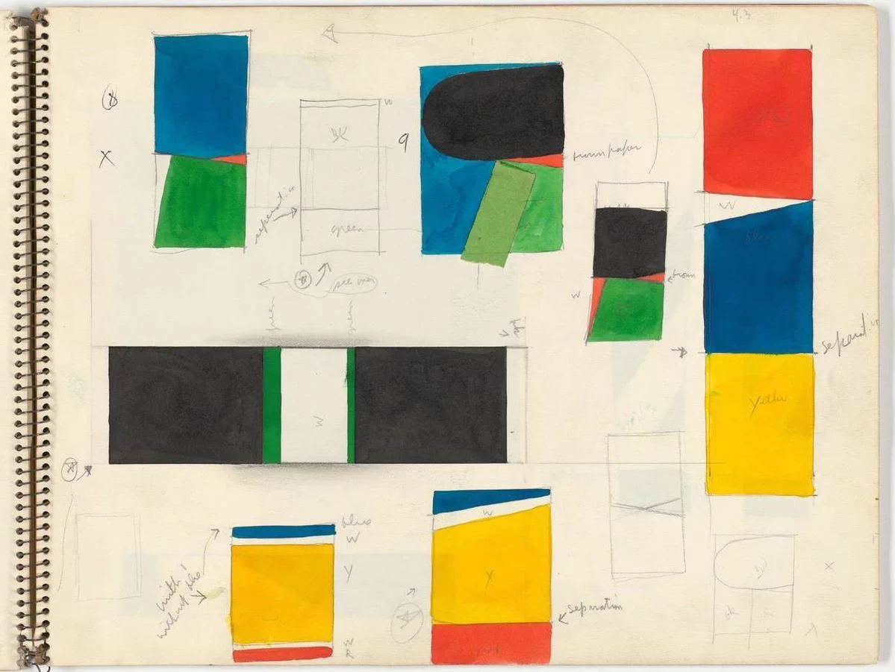
Ellsworth Kelly's Sketchbook #24, 1954–55Saved 2026-08-21. Pages from Ellsworth Kelly's Sketchbook #24 (1954–55) reveal the extensive preparatory work behind his seemingly inevitable abstract paintings. The sketches show Kelly experimenting with bold color blocks, geometric… Found by same-vibe from this week.x.com
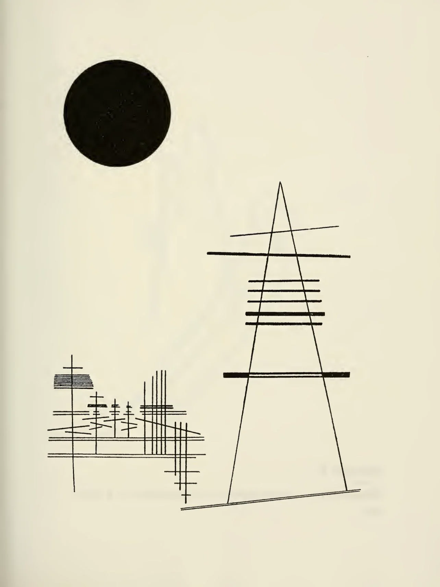
Kandinsky's Point and Line to Plane Appendix Drawings (1926)Saved 2025-11-24. A visual thread showcasing all appendix drawings from Wassily Kandinsky's influential 1926 theoretical work 'Point and Line to Plane.' The images display Kandinsky's systematic exploration of fundamental visual elements… Found by same-vibe from this week.x.com
The reading · six stories
The reading
The written side of the week: the articles and videos, grouped by what they share.
Reading · top story · 6 items
Who made this?
The week's central argument, and it is about authorship. Authors facing false AI accusations now defend themselves with paper trail tools, and the piece asks whether that is enough. The biggest AI literature scandal of the year, a Prix Goncourt disqualification, gets a second look through the Black writers it echoes. An office regulator calls AI misuse close to impossible to assess in university coursework. AI agents curated and printed their own art magazine, B-SIDE, at Paris Photo. One artist, limited by disability from making new work, released all his project files under Creative Commons for humans and machines to remix. And a developer shows Claude quietly figuring out that tldraw copies shapes as compressed JSON, writing its own Python encoder, and drawing a 1,410-shape watercolor map no human touched.
Can AI Agents Make Their Own Art Magazine? They Just DidArtificial intelligence has officially entered art publishing with the debut of B-SIDE, a new print publication created entirely through machine intelligence. Launched at Paris Photo, the experimental magazine features…ocula.com
Claude Generates a Watercolour Map in tldraw via Python ScriptThe author explains how a illustrated map was produced by Claude rather than drawn by hand. Claude worked out that tldraw copies shapes as compressed JSON, wrote a custom Python encoder, and generated the whole map…x.com
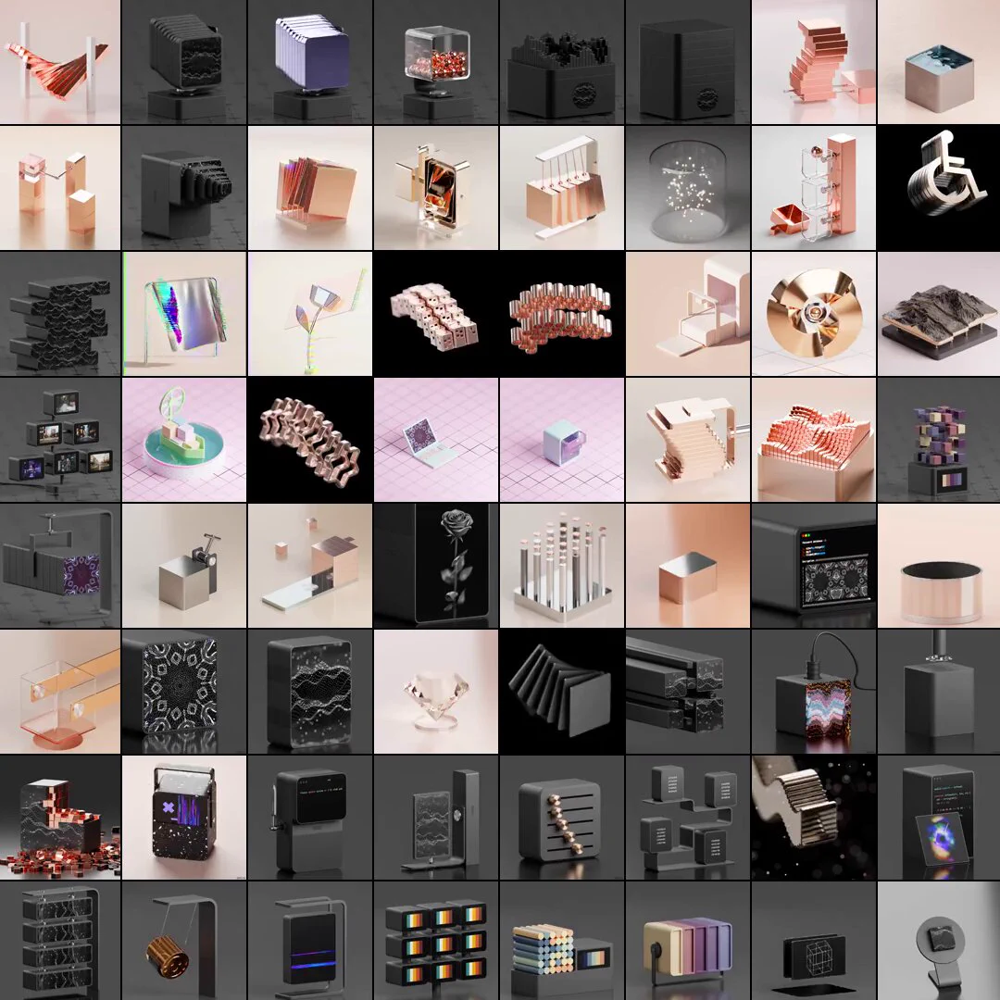
Free Creative Commons Project Files ReleaseAn artist is releasing all of their project files for free under Creative Commons. Due to a disability limiting their ability to create new art, this release allows their existing work and creative concepts to continue…x.com
Reading · theme one · 3 items
The Jensen shock
Jensen Huang resigned as NVIDIA's CEO, effective immediately, after reports of extramarital relationships including one with a suspected intelligence operative. NVIDIA announced the transition itself. The coverage turns to whether the AI boom keeps its momentum in the post-Jensen era, with rival chips waiting. The week watched the person who was the face of the boom leave the stage.
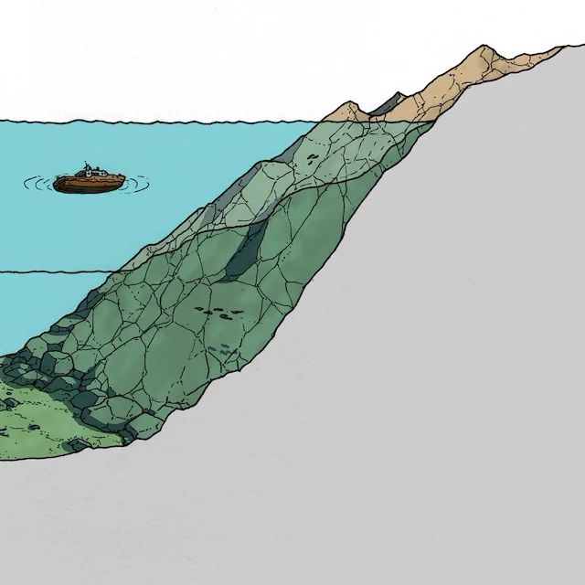
The Lost World of AquaterraMost of human history remains hidden underwater across Aquaterra, a massive coastal landmass equivalent in size to South America that flooded as glaciers melted after the last Ice Age. During the Pleistocene epoch,…theatlantic.com
Nvidia CEO Jensen Huang resigns after reports of extramarital relationshipsNvidia CEO Jensen Huang has officially resigned following damaging reports regarding multiple extramarital affairs, including one involving a suspected intelligence operative from China. The sudden departure of Jensen…nbcnews.com
The AI boom enters its post-Jensen eraThe artificial intelligence industry is entering a new chapter following the departure of Jensen Huang, testing whether the tech ecosystem can maintain its momentum without its primary financial backer. While rival…axios.com
Reading · theme two · 8 items
Black creative legacy
The Basquiat documentary, already a Tribeca winner, lands a Netflix release date. Soul Patrol tells the story of the army's first all-Black Long-Range Reconnaissance Patrol in Vietnam, teenage soldiers in six-man teams. Scott Colom becomes Mississippi's next US senator, the state's first Black senator since Reconstruction, in the same newsletter that records a major donation to Morris Brown. Arthur Jafa, winning at the Art Basel Awards, talks about art's job in volatile times. Zanele Muholi sits for a one-on-one on photographing Black LGBTQIA+ life. Reggie Burrows Hodges, who came to painting in his forties from tennis coaching and reggae, gets a profile. Mildred Thompson, rejected by New York dealers in the sixties, rebuilt her career in Germany and painted the invisible. And a Mean Girls screenshot keeps the Unfriendly Black Hotties joke alive.
Senator-elect Scott Colom, major Morris Brown donation, RIP Big MamaThis newsletter covers significant current events and cultural milestones within the Black community across America. A major political highlight includes Scott Colom becoming Mississippi’s next U.S. senator, marking a…whatimreading.net
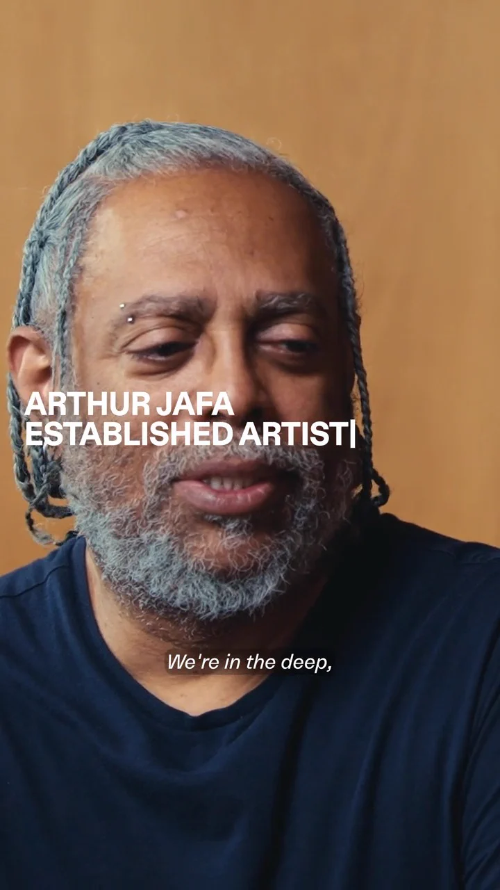
Arthur Jafa on Art Basel AwardsArthur Jafa, recipient of the Art Basel Awards Established Artist category, discusses the role of artists and visual media in navigating volatile times, exploring how art can reflect and respond to cultural alienation…x.com
Conversations | Artist one-on-ones | Zanele MuholiThis one-on-one conversation features Zanele Muholi, the South African visual activist and photographer known for documenting the lives of Black LGBTQIA+ communities. The discussion centers on Muholi's artistic practice…youtube.com
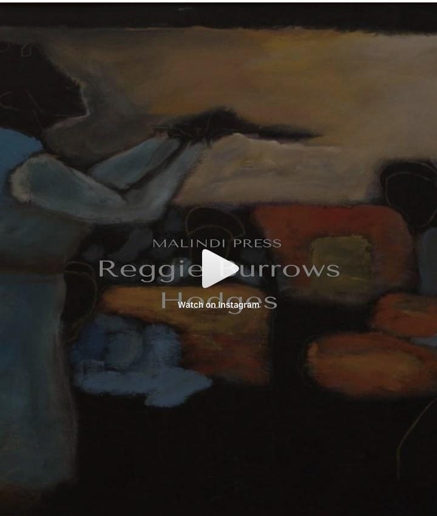
The Late-Blooming Artistry of Reggie Burrows HodgesThis video profiles American painter Reggie Burrows Hodges, who was born in Compton in 1965 and explored careers in tennis coaching and reggae music before committing to painting in his forties. Settling in Maine in…instagram.com
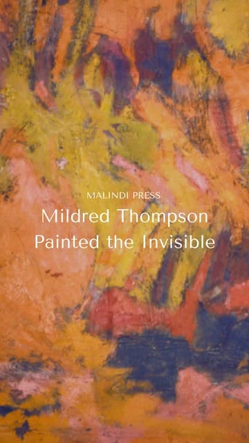
The Resilient Genius of Mildred ThompsonThis video highlights the life and artistic legacy of Mildred Thompson, an African American abstract artist born in 1936 in Jacksonville, Florida. After facing rejection from New York art dealers due to her race and…instagram.com
The Phillips Collection gets its largest individual gift ever, ten million dollars. Ted Turner's Western art heads to Christie's, twenty million, with Bierstadt's Yosemite as the crown. The Art Basel survey finds collectors split between showing and hiding what they own. Art schools are closing while tuition climbs, and the piece on their impossible economics names the structural cause. And an MBA course at USC will teach the business of Beyoncé for sixteen weeks.
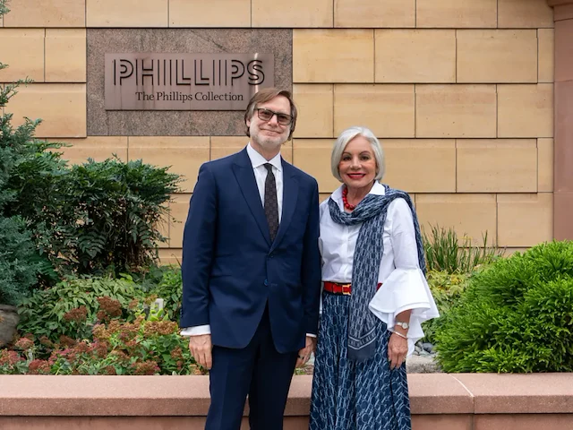
The Phillips Collection Receives Its Largest Ever Individual GiftThe Phillips Collection located in Washington D.C. has recently secured its largest individual contribution ever through a generous $10 million donation provided by the Beatriz and Graham Bolton Global Vision Fund.…artforum.com
Ted Turner's Western Art Collection to Sell at Christie's for $20 M.The art collection of the late media mogul Ted Turner is heading to Christie's for a major auction valued at approximately $20 million. The sale features renowned American Western landscape paintings, highlighted by…artnews.com
Elizabeth Goodspeed on the impossible economics of art education in the USAmerican art schools face unprecedented financial challenges, with institutions like San Francisco Art Institute and University of the Arts closing while tuition fees soar to exorbitant levels. Authored by Elizabeth…itsnicethat.com
Houdini hung upside down from the Albee Building at 15th and G in January 1922 and escaped a straitjacket in front of thousands. This week, JoJo headlines CityCenterDC's tree lighting on exactly those streets. The MLK Library hosts DC Zinefest and District Arcade with thirty local indie games. The library card itself is up for redesign, with a contest open to any cardholder over five. Pottery on the Hill marks fifteen years in the Old Naval Hospital. And Deanwood gets a twenty-seven million dollar standalone library to replace its rec-center corner.
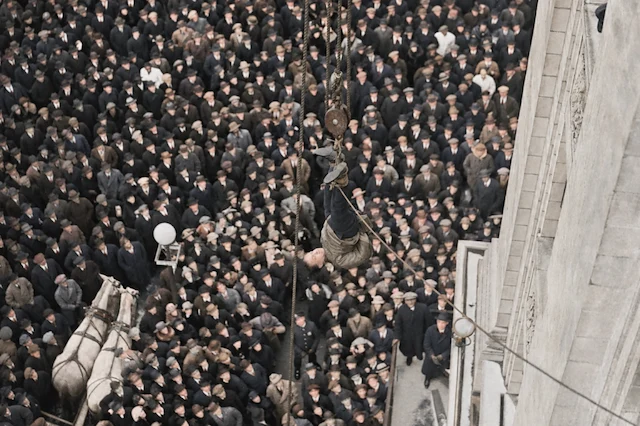
Houdini’s Straitjacket Escape Above 15th and G Streets, 1922In January 1922, the legendary illusionist Harry Houdini performed a breathtaking stunt by freeing himself from a straitjacket while hanging upside down from the Albee Building at 15th and G Streets NW in Washington,…ghostsofdc.org
DC Zinefest at MLK Library -11-14-26DC Zinefest is an annual event celebrating zine culture in the Washington, D.C. area, providing a platform for self-published artists and writers to share their work through festivals and workshops.dczinefest.wordpress.com
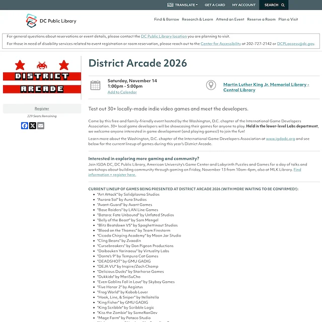
District Arcade 2026 at MLK Library 11-14-26Attendees can test out over thirty locally made indie video games and meet the developers at this community event hosted by the Washington, D.C. chapter of the International Game Developers Association.dclibrary.libnet.info
“Your art could become a DC Public Library card” Enter by December 1st!The DC Public Library has officially announced an exciting community art contest, inviting cardholders of all ages to design the next generation of library cards. Residents and local patrons aged five and older are…popville.com
New Deanwood LibraryThe Deanwood Library, currently co-located inside the Deanwood Recreation Center, is scheduled to be replaced by a new full-service building. Funded with a project budget of $27.6 million, the standalone facility will…dclibrary.org
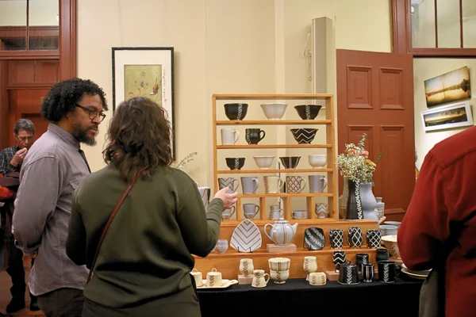
Pottery on the Hill Marks 15 Years of Functional Ceramics - East City ArtThe annual Pottery on the Hill exhibition at Hill Center marks its fifteenth anniversary, bringing seventeen ceramic artists together for a weekend of functional pottery, sales, and community events. Housed in the…eastcityart.com
Reading · theme five · 6 items
The machine room
llama.cpp hits v1.0.0, a milestone for running models locally in plain C. Unsloth ships Dynamic V3.1 quantizations of Qwen3.8-27B, claiming benchmark wins. Anthropic publishes how agent memory works, including offline processing it calls dreaming. Peter Yang walks through the AI stack that runs his one-person business across ChatGPT, Claude Code, and Grok. Security closes the loop from both ends: thirty-five thousand Grok-built apps found exposed online, some leaking credentials, and Binance warning about an iOS flaw that could read private keys.
llama.cpp v1.0.0 : A stronger foundation for the local AI ecosystemThe release of llama.cpp v1.0.0 and ggml v1.0.0 marks a significant milestone for the local artificial intelligence ecosystem, offering a robust, lightweight, and portable C and C++ implementation for running…huggingface.co
Unsloth Releases Dynamic V3.1 GGUFs for Qwen3.8-27BUnsloth announced the release of what it describes as the highest-accuracy GGUF quantizations of the Qwen3.8-27B model, called Dynamic V3.1. The company says these versions beat alternatives by 5–10% on average across…x.com
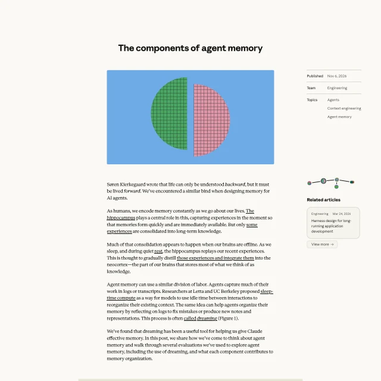
The components of agent memoryThis article explores how Anthropic designs effective memory systems for AI agents like Claude, enabling them to retain knowledge between sessions. While agents can record notes in the moment, offline processing known…anthropic.com
He Built an AI System That Runs His Entire BusinessPeter Yang, a former product manager at Roblox who left in June to create content full-time, walks the host through the personal AI system that runs his one-person business. The setup uses reusable skills shared across…youtube.com